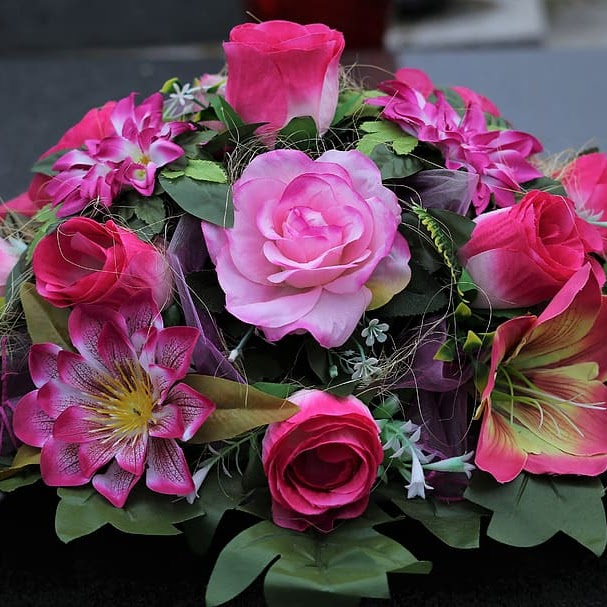

Floricultura da Mary
Os melhores presentes!
🌸 Descubra a magia das flores na nossa floricultura encantada!
Transforme momentos especiais em lembranças inesquecíveis com a beleza
Fragrância das mais exuberantes flores. Desde elegantes arranjos para presentes
Até decorações deslumbrantes para eventos, nossa coleção diversificada oferece
Opções para todos os gostos e ocasiões.
Combinando a frescura das flores com a criatividade dos nossos floristas,
garantimos sorrisos radiantes e corações aquecidos. Visite-nos hoje mesmo e deixe-nos
Fazer suas emoções florescerem! 🌷🌼
|
Arranjos Uma sinfonia de cores e formas que encantam os olhos e acalma a alma. Nossos arranjos de flores trazem a natureza em sua máxima expressão para iluminar o seu dia. |
Presentes Embrulhados com carinho, nossos presentes são abraços cuidadosamente selecionados para expressar o que palavras muitas vezes não conseguem. Celebre momentos especiais com gestos que aquecem o coração |
Chocolates Derreta-se em indulgência com nossos chocolates artesanais. Cada mordida é uma jornada de sabor que desperta os sentidos e faz a felicidade se espalhar em cada pedacinho. |
Dê vida às suas emoções com a nossa floricultura.
Neste vídeo, explore nossa coleção de cores e fragrâncias
Que contam histórias de amor,
Celebração e beleza natural.
Bem-vindo ao nosso mundo floral,
Onde cada flor é uma expressão única. 🌸🌼🌿
Localização
Floricultura da Mary
Rua Pirenópolis, 311 - Jardim Cumbica - Guarulhos /SP
Descubra nossa floricultura, onde a beleza da natureza se reúne em arranjos
encantadores. De cores vibrantes a elegância sutil, cada flor conta uma história
única. Encontre o presente perfeito ou ilumine seu dia com nossas criações
florais. Bem-vindo(a) a um mundo de flores!